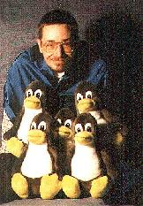

Hall of Fame
This
WWW page would never exist without the cooperation of a lot of people.
Many thanks to:
- the developers
- Fritz Elfert and his crew for the making of I4L
- Michael Hipp for the "ipppd"
- Andreas Kool for "isdnlog" and "isdnmon"
- Michael Knigge for "imon"
- Volker Goetz for "imontty", the list management and the FAQ base
- Gert Doering for "mgetty+sendfax"
- Michael "Ghandi" Herold for his "vbox"
- and all the other people cooperating with the i4l developer team
- the people who gave a lot of hints
- All the people in the i4l mailing list who could help me
- Christian Brunner (TU Munich)
- Andreas Sellmeier (TU Munich)
- Joachim Ritschel (TU Ilmenau)
- Daniel Harbeck for his short email tutorial
- Sven Geggus for many hints concerning aliasing
- Markus
Dickebohm (very good Usenet tutorial)
-
Matthias Heßler for the vbox tutorial and **lots** of
coworking - especially for the FAQ which causes a lot of labour.
-
Dirk Husfeld und
-
Herbert Thielen für sehr wertvolle Hilfe bei der
Scriptenentwicklung zu "connect".
- and many more...
- the supporters of this WWW page
- and of course to
Copyright © (GPL V 2) 1996
Bernhard Hailer
Last modification: 24-Feb-97 BeH